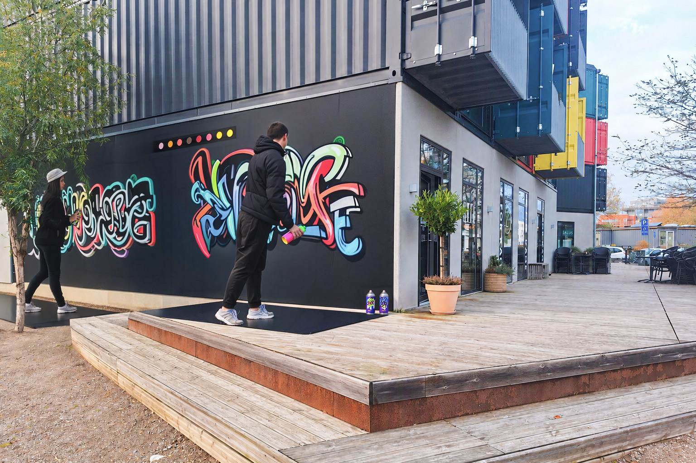

Prodoukt navn

En ny måde at sætte sit præg på byen
Forestil dig en by, hvor kreativiteten får frit spil uden at efterlade skadelige spor. Med digitale street art-vægge i Musicon kan graffiti og gadekunst udfolde sig på en ny og mere bæredygtig måde. Konceptet erstatter traditionelle graffiti-flader med interaktive digitale skærme, hvor brugerne kan skabe, dele og udforske deres kunst gennem en realistisk digital spraydåse. Skærmene aktiveres kun, når de bruges, og suppleres af energiskabende trædeflader, der omdanner menneskers bevægelser til strøm. På den måde forenes street art, teknologi og bæredygtighed i et fælles kreativt byrum, hvor alle kan være med til at sætte deres præg på Musicon, uden spraymaling, kemikalier og unødvendigt ressourceforbrug
En autentisk graffioplevelse
Den digitale spray er designet til at føles som en ægte spraydåse. Med realistisk form, fysiske knapper, touchfunktion og autentiske spraylyde genskabes følelsen af traditionel graffiti, bare digitalt og uden maling eller kemikalier.